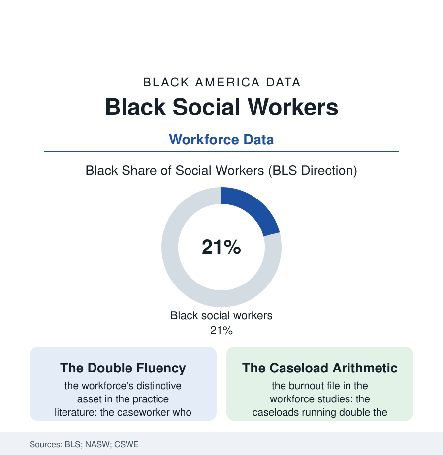

Black Employment
The Caseworkers: Black Social Workers and the Load They Carry
One social worker in five is Black — staffing the child welfare, hospital, and school systems their own communities meet most, translating the state to the family and the family to the state. The social-work file.

When the state enters a Black family's life — through the hospital, the school, the agency — the face it wears is, one time in five, a Black social worker's: the caseworker, the discharge planner, the school counselor's colleague, carrying a caseload of the community's hardest files and a fluency no credential confers. This article reads the social-work file.
The Workforce at the Desk's Other Side
The profession's demography is the section's distinctive pattern: a workforce majority female and, in its Black fifth, concentrated exactly where the need and the scrutiny are thickest — the public child-welfare agencies (the protective-services file's caseworkers, their Black share in many urban systems running well above the national), the public hospitals' floors, the school systems' family-facing offices — the state-facing end of the profession, while the licensed private-practice tier, the therapy office with the waiting list, thins toward the profession's mean. The pipeline data trace the sorting: the MSW as the required credential (the social-work degree's own economics — the graduate debt against the public salary the profession's surveys flag as its structural wound, the Black graduate's debt rows the heaviest in the CSWE data), the licensure exams' pass-rate gaps (the section's credential files all over again, the testing controversy of the recent record fought in the profession's own journals), the field placements in the underfunded agencies that hire their own interns — the pipeline and the employer the same strained institution. The practice literature names the workforce's double position with care: the Black caseworker as the system's internal translator and its internal critic — the worker whose read of a family's kitchen-table reality can redirect a case the checklist would have driven elsewhere, and whose own presence in the removal decision concentrates the community's ambivalence entire: the file of the family across the desk may be, streets over, her own.
The grandmother file runs quietly through the caseload data: a striking share of the cases on a Black caseworker's desk involve kinship care — the grandmother raising the grandchildren, the aunt licensed as the foster home — and the workforce's cultural file is the system's working knowledge of how the care actually happens. The agency's forms have a field for the placement. The caseworker's notebook has the family's whole tree. The tree, in the outcomes data, is usually the better document.
The Load and the Ledger
The workforce studies' burden rows are the file's heavy center: the caseloads in the public agencies running at multiples of the professional standards (the child-welfare file's arithmetic — the cases per worker against the children's faces each represents), the secondary-trauma data (the profession that absorbs the community's worst days posting its own mental-health rows in the occupational surveys — the helpers' help structured, in the agencies' budgets, last), the turnover's compound interest (the public systems losing a third of the front line a year in the worst rows — every departure a family's file re-opened by a stranger, the continuity that is the work's whole method destroyed by the work's own conditions), and the wage file's verdict on caring labor generally: the master's degree paid like the bachelor's in the adjacent fields, the profession's feminization and its Black concentration jointly priced. The counterweights in the record are the workforce's own constructions: the National Association of Black Social Workers, founded in the movement years with an explicit charter (the profession's ethics read from the community's side — its code and conferences still the file's institutional anchor), the HBCU schools of social work supplying the pipeline's committed core, the supervision and cohort models in the retention studies that demonstrably slow the door. The file closes at the desk where it began: the family across it, the decision pending, the worker — one night a week in the interview data, somebody's auntie, somebody's church member, always somebody's neighbor — writing the note that the system will act on, fluent in both languages in the room, paid in neither's coin. The census counts the profession. The families count the translator, and keep her number.
Reading the Social-Work Data
The social-work file is the employment section's mediation department: the workforce that stands between the state and the family, belonging to both. The BLS publishes the headcount. The families — who ask for her by name — publish the value, in the only currency the work has ever paid reliably.
More in Black Employment
The Black Unemployment Rate: The Two-to-One Pattern
Black unemployment runs at roughly twice the White rate — 5.5 percent against 3.3 percent in annual averages — a ratio stable across five decades of federal data. How it is measured and why it persists.
Black Median Weekly Earnings: The 80-Cent Ratio
Black full-time workers earn a median of about $900 a week — roughly 80 cents for every dollar White workers earn. The BLS earnings data by group, gender, and occupation.
Black Labor Force Participation: Working at National Rates
Black labor force participation runs at roughly the national rate — and Black women participate at higher rates than White women. The BLS participation data.
Source: U.S. Bureau of Labor Statistics; National Association of Social Workers workforce data; Council on Social Work Education enrollment data; child-welfare workforce studies.